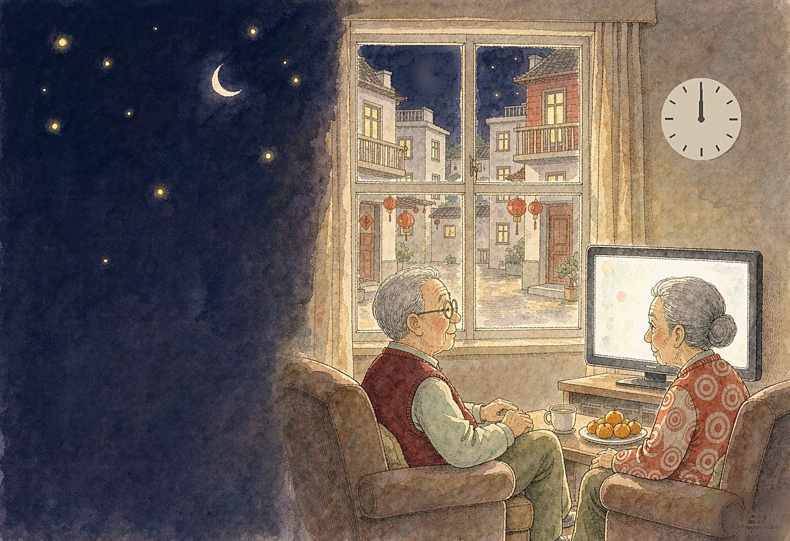

说出来，大家不一定相信，可是，这却是真实的。
随着年龄的增长，尤其是退休以来，每年的春节，总有一个不大也不小的烦恼困扰着我：那就是劈头盖脸的、常常又是突如其来的爆竹声。
在节日里燃放烟花爆竹，这正是周围从孩童到老人不少人所热衷的，似乎只有那样，才能凸显浓浓的节日气氛、才能表达热烈的庆祝。
但也有人（包括我）比较注重过年的内涵，更愿意享受一个清静、温馨的春节。
多少年了，从除夕（有时更早）到元宵（有时更晚）这十来天里面，爆竹声此起彼伏、震耳欲聋，让人心生厌烦，甚至寝食难安！
记得，有多少个除夕，全家边看春晚、边守岁，迎候新的春天的降临，想聆听新年钟声的敲响。但每次都不能如愿。因为从倒计时开始、正是爆竹声最猛烈的时候，把电视机的音量调节到最大也无济于事，爆竹声完全淹没了新年的钟声，留下了遗憾。
春节期间，睡不安生更是常事。霹雳啪啦的爆竹声常常迫使人久久难以入眠，有时刚刚入睡又突然被闷雷似的爆竹声震醒，让人心惊肉跳，令人苦不堪言。
为此，我曾经特地从网上购买了德国产“安耳悠”防噪隔音耳塞。想不到这东西也不大好使：好不容易把它塞进了耳朵，相当的不舒服。稍不留神，它常常又会滑了出来。所以还是不能睡个安稳觉。
令人庆幸的是：今年一月一日《上海市烟花爆竹安全管理条例》开始施行，外环内全面禁止燃放烟花爆竹。
楼组长拿着街道统一印发的 “禁燃告知书”，挨家挨户上门分发、宣传、签收；监管部门也严控源头，杜绝隐匿的燃放风险。
对这个堪称上海“史上最严”的 “禁燃令”，起先，我还是心存疑虑的：“严法”会不会无力“责众”？执法又会不会应接不暇？
直到我们舒舒坦坦地看完春晚，随着主持人朱军的节奏，一起兴奋地、大声地倒记时：“十、九、八 ……”，才十分感叹：今年，终于听到了清脆、悦耳的新年钟声！
多少年了，都没有像今年的除夕之夜那样睡得安宁、踏实。
初一清晨，走出家门。空气中没有一丝难闻的“硝烟味”，是那样的清新；小区里、道路旁不再出现厚积成堆的“炮灰”，是那样的整洁。真是令人心旷神怡！
报纸上，用十分醒目的标题报道：除夕申城外环线内基本零燃放。
烟花爆竹垃圾量、火警数量、伤害事故数量都大大下降，人人都十分关心的空气质量明显好转。正所谓：未见高升腾空起，更喜新风拂申城。
而在这背后，我们清晰地看到了，每位普通市民对移风易俗的支持与参与，对法治精神的捍卫和守护，每位志愿者的辛勤奉献。
我期待着：未来的一个个春节，“禁燃”工作能进一步提升、越来越顺畅。法治意识能越来越深入人心！
（本文刊登在2016.4.2《杨浦时报》上）